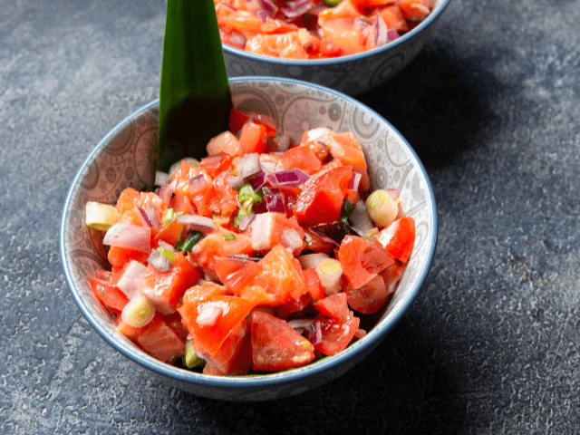

Lomi-lomi salmon is a traditional American dish originating from Hawaii. The dish is prepared with salmon and tomatoes as the main ingredients. It was originally introduced to Hawaii by early Western sailors. The salmon is rubbed with salt, then combined with diced tomatoes, minced red onion, and green onions.
Meal prep time : 20 minutes
Servings : 8